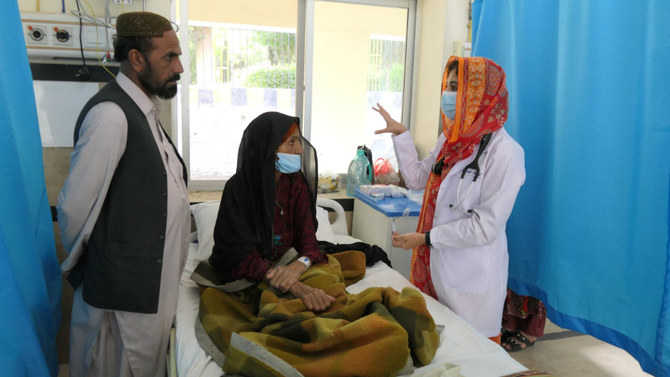

We are looking to use technology better to facilitate the comprehension of NZSL by the broader population.
“Sign Language Translation (SLT) is the task of translating videos with sign language into spoken language... It is an important research area that facilitates the communication between the Deaf and other communities”. Providing equality to all parts of society is a basic human right and a responsibility of governments, industry and communities around the world. Being able to be understood by those around you and being able to make connection and form bonds with a wide range other people are both human needs that are more difficult for the deaf and hearing impaired to achieve than their counterparts in the rest of society(Papastratis et al., 2021. p 13).
Considerable research is being done in the field of sign language interpretation(SLI), which focuses on translating the written or spoken word into sign language. Companies like Signapse are focusing on the application of SLI in the areas such as transport, websites and broadcast media, which greatly improves the ability of the deaf and hearing impaired to understand and participate in the world they live in. In a similar way it would be of great benefit to be understood and engage with society more fully for this community. Simply being able to ask a question when taking public transportation is something we all take for granted, and not being able to, could result in missing a connection or ending up in the wrong destination. Similarly, being able to do an interview, make a public address, participate in community meetings and groups, chat(by video) on social media, or simply being able to communicate with your child’s teacher at a parent teacher meeting are all possibilities that will be opened up by improving SLT (Signapse, n. d.).
Another area of critical importance where clear communication is an issue is in medical care. “First, it is difficult for deaf people to accurately express their physical symptoms to doctors, which can lead to doctors being unable to accurately grasp the specific etiology and symptoms of patients and it is easy to misdiagnose and miss a diagnosis. Second, patients can’t fully understand the doctor’s treatment suggestions and plans.” Also, it’s worth considering situations where timely communication is of the essence, such as in an emergency. Being able to understand a NZSL speaker in real time could literally be an issue of life and death for them or someone close to them (Xia et al., 2022).
Lastly, one of the greatest inequalities and disadvantages this community faces is simply having a drastically smaller of pool of people to communicate and connect with. With fewer than 20,000 New Zealanders able speak NZSL the deaf and hearing impaired are severely limited in the amount of potential people with whom to form friendships and relationships. Social interaction, having a sense of belonging, building bonds of friendship, and developing emotional connections are all critical parts of basic human fulfilment. Further development and cost-effective implementation of SLT greatly increases the number of people that can understand and interact with the deaf and hearing impaired, thereby opening up possibilities of better inclusion, making it easier for this community to more fully interact and take part in all aspects of social life, and the potential of significantly improved emotional well-being.
Made 16 June 2023